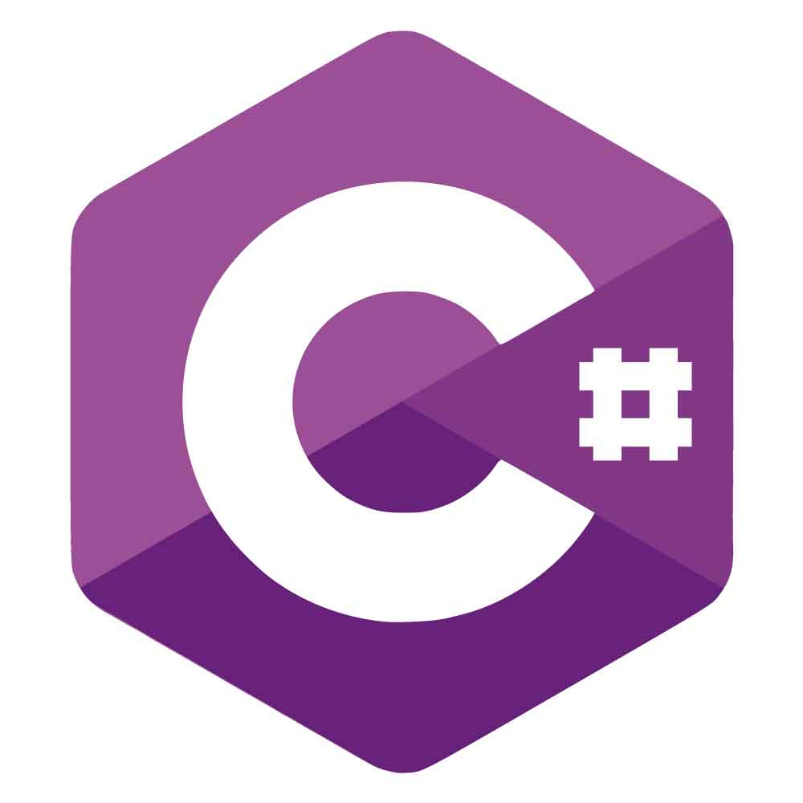
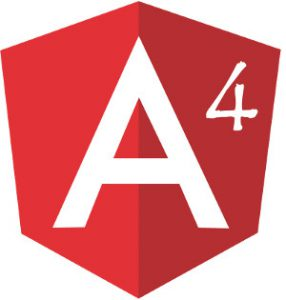

Usman Haider Khan
Being in a technology driven profession, provide a detailed description of your technical expertise and your work experience as an ASP.NET web developer in the past. Other details such as contact information, academic qualifications and references of your previous employers also need to be included in your resume. Write your resume in a simple language and avoid any grammatical errors..
I want to join as an ASP.NET web developer in a progressive organization to pursue professional excellence and contribute my best in the accomplishment of organizational goals..
Experience
Xamarin Cross Plate forms Developer
Bring to the table win-win survival strategies to ensure proactive domination. At the end of the day, going forward, a new normal that has evolved from generation X is on the runway heading towards a streamlined cloud solution. User generated content in real-time will have multiple touchpoints for offshoring.
Asp.Net(MVC) C# Developer
Capitalize on low hanging fruit to identify a ballpark value added activity to beta test. Override the digital divide with additional clickthroughs from DevOps. Nanotechnology immersion along the information highway will close the loop on focusing solely on the bottom line.
Secnior Web Designer
Podcasting operational change management inside of workflows to establish a framework. Taking seamless key performance indicators offline to maximise the long tail. Keeping your eye on the ball while performing a deep dive on the start-up mentality to derive convergence on cross-platform integration.
Web Design Intern
Collaboratively administrate empowered markets via plug-and-play networks. Dynamically procrastinate B2C users after installed base benefits. Dramatically visualize customer directed convergence without revolutionary ROI.
Education
University of Gujrat Lahore
CGPA: 3.36
Photon High School
Percentage: 75%
Skills
-

-

-

-

-

-

- 
-

-

-

- 
- Mobile-First, Responsive Design
- Cross Browser Testing & Debugging
- Cross Functional Teams
- Agile Development & Scrum
- Cross Platform & Development
- Asp.Net Core Cross Browser& Support
Interests
Apart from being a web developer, I enjoy most of my time being outdoors. In the winter, I am an avid skiier and novice ice climber. During the warmer months here in Colorado, I enjoy mountain biking, free climbing, and kayaking.
When forced indoors, I follow a number of sci-fi and fantasy genre movies and television shows, I am an aspiring chef, and I spend a large amount of my free time exploring the latest technolgy advancements in the front-end web development world.
Apart from being a web developer, I enjoy most of my time being outdoors. In the winter, I am an avid skiier and novice ice climber. During the warmer months here in Colorado, I enjoy mountain biking, free climbing, and kayaking.
When forced indoors, I follow a number of sci-fi and fantasy genre movies and television shows, I am an aspiring chef, and I spend a large amount of my free time exploring the latest technolgy advancements in the front-end web development world.
Apart from being a web developer, I enjoy most of my time being outdoors. In the winter, I am an avid skiier and novice ice climber. During the warmer months here in Colorado, I enjoy mountain biking, free climbing, and kayaking.
When forced indoors, I follow a number of sci-fi and fantasy genre movies and television shows, I am an aspiring chef, and I spend a large amount of my free time exploring the latest technolgy advancements in the front-end web development world.
Awards & Certifications
- Solo Learn Java Certified Developer
- Mobile Web Xamarin - Cross Plate Form Certification From EVS
- C# Trainer at Evs Lahore
- Asp.Net Core Evs Certified Full Stack Developer
- SQL Management Studio 2018 Latest
- PHP Solo Learn Certified Developer